.png)
Optimus Prime is one of the most iconic characters from the Transformers universe. Here’s a story summarizing his origin, evolution, and some of his most heroic moments.Optimus Prime was originally known as Orion Pax,a humble, kind, and curious young Cybertronian who worked as a data archivist on Cybertron, the Transformers' home planet. Cybertron was once a peaceful world, but it was gradually torn apart by a civil war between two factions: the Autobots, who valued freedom and peace, and the Decepticons, led by the ruthless Megatron, who sought power and control. Orion Pax admired Megatron, who started as a rebellious leader advocating for change in Cybertron’s rigid society. However, as Megatron's ambitions grew, so did his brutality. When Orion saw Megatron’s true intentions—domination rather than freedom—he realized that a new kind of leader was needed to stand against the Decepticon threat.Orion’s bravery and sense of justice caught the attention of Alpha Trion, one of the oldest Transformers and a member of the ancient council. Alpha Trion believed Orion had the potential to lead Cybertron toward peace. Through the power of the Matrix of Leadership—an ancient relic that grants its bearer wisdom and strength—Orion was transformed into Optimus Prime, the leader of the Autobots. With his new name and form, Optimus Prime became a symbol of hope, courage, and selflessness for the Autobots.As leader of the Autobots, Optimus Prime fought countless battles against Megatron and the Decepticons. The war was fierce, pushing Cybertron to the brink of destruction. Recognizing the devastation, Optimus made the difficult decision to leave Cybertron with the Autobots in search of a new world, hoping to find resources to rebuild their home planet. This journey eventually led them to Earth. On Earth, Optimus Prime and the Autobots made a pact to protect humanity from the Decepticons, who sought to conquer and drain Earth of its resources. Optimus valued all life, human or Cybertronian, and he believed in protecting the innocent above all else. He adopted the alternate form of a powerful truck, blending in while gaining mobility and strengthThroughout his time on Earth, Optimus faced constant challenges, from fighting Megatron's forces to balancing his desire for peace with the need to protect others through force. In each battle, Optimus Prime displayed his core values of courage, compassion, and wisdom. His famous motto, “Freedom is the right of all sentient beings,” encapsulated his philosophy. Optimus became a father figure to both his Autobots and some of his human allies, including characters like Sam Witwicky in the live-action movies. He often struggled with the burden of leadership, balancing the weight of the Matrix of Leadership with his own moral compass. .In some storylines, Optimus Prime’s journey leads him to a noble sacrifice. To save Earth or Cybertron, Optimus willingly lays down his life, believing that true leadership sometimes means making the ultimate sacrifice. His death often leaves a deep impact on both the Autobots and humanity, reminding everyone of the price of freedom and the strength of selflessness. Yet, Optimus often returns, either through the Matrix of Leadership or as a restored force of good, reinforcing the idea that hope and heroism are never truly gone. Optimus Prime’s story has evolved over the years, but his legacy remains that of a heroic leader who stands for justice, freedom, and peace. He’s an enduring figure whose dedication to these values makes him a beloved hero across generations. Whether in comics, cartoons, or films, Optimus Prime's journey reminds us that true strength comes from compassion and integrity. In every incarnation, Optimus Prime continues to inspire fans with his undying commitment to protecting all life and fighting for a better future.
.avif)
 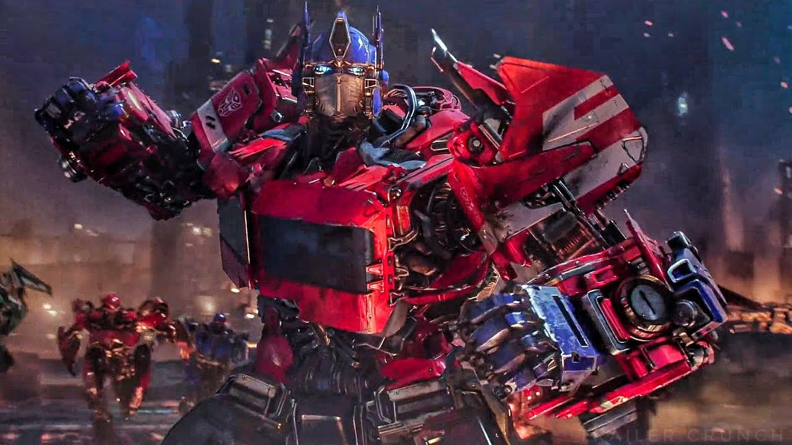
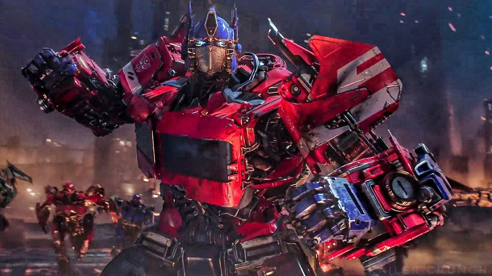
Bumblebee, one of the most beloved Autobots in the Transformers universe, has an inspiring story filled with courage, loyalty, and resilience. Here’s a summary of his journey.Bumblebee was originally a young scout on Cybertron, the Transformers' home planet, during a time of civil war. Unlike many other Autobots, Bumblebee was not particularly powerful or large, but he made up for it with his courage, agility, and intelligence. As a scout, he had a key role in gathering information, relaying messages, and supporting other Autobots on the battlefield. Bumblebee’s smaller size and natural curiosity allowed him to move undetected, making him invaluable for covert operations.Despite his small stature and lesser strength compared to other Autobots, Bumblebee was fiercely brave. He idolized Optimus Prime and shared his leader’s ideals of freedom and compassion. Bumblebee’s loyalty and determination to protect others earned him Optimus Prime’s respect and trust.As the Autobot-Decepticon war forced the Autobots to seek new worlds for survival, Optimus Prime sent Bumblebee to Earth as a scout and protector. Bumblebee's mission was to prepare Earth for the Autobots' arrival, find allies, and keep the Decepticons at bay. Adopting the alternate form of a yellow car (usually a Volkswagen Beetle in the classic versions and a Camaro in the live-action films), Bumblebee blended in with humanity while keeping a low profile. However, Bumblebee’s time on Earth was not easy. In several storylines, he lost his voice due to a severe battle injury. This incident, which sometimes involves him being attacked by Megatron or another powerful Decepticon, left Bumblebee unable to speak. Instead, he communicated through sound bites and songs played over his radio. This unique way of communicating added to his charm and became one of Bumblebee’s most distinctive characteristicsOne of Bumblebee’s most heartwarming traits is his bond with humans. In the live-action movies, he forms a deep friendship with a young human named Sam Witwicky, who helps him in the battle against the Decepticons. Sam and Bumblebee’s relationship highlights Bumblebee’s compassion and protectiveness, as he risks his own safety to keep his human friend safe. In the 2018 movie Bumblebee, he also forms a strong bond with Charlie Watson, a teenage girl who helps him regain his strength and memories. Through these friendships, Bumblebee learns more about humanity and grows even more dedicated to protecting Earth.Bumblebee’s loyalty to Optimus Prime and the Autobot cause is unwavering. He stands by Optimus’s side in countless battles, willing to risk his life to support his leader’s vision of a peaceful future. In some storylines, Bumblebee even takes on a leadership role when Optimus is not around, guiding the Autobots with the same ideals of courage and compassion. In the Transformers: Prime series, Bumblebee plays a key role in the final battle against Megatron, and his bravery ultimately leads to Megatron’s downfall. His willingness to sacrifice himself if necessary and his determination to protect others make him one of the Autobots' most reliable members. Throughout the Transformers saga, Bumblebee transforms from a small, often underestimated Autobot into a hero in his own right. His journey is marked by acts of bravery, moments of vulnerability, and his unbreakable loyalty to both his Autobot comrades and his human friends. Though he may not be the biggest or strongest, Bumblebee’s resourcefulness, resilience, and heart make him an indispensable part of the Autobot team. Bumblebee's story inspires fans with the message that true strength isn’t just physical but comes from bravery, loyalty, and kindness. His enduring popularity reflects his role as the ultimate underdog hero someone who overcomes his limitations and continually puts others before himself.
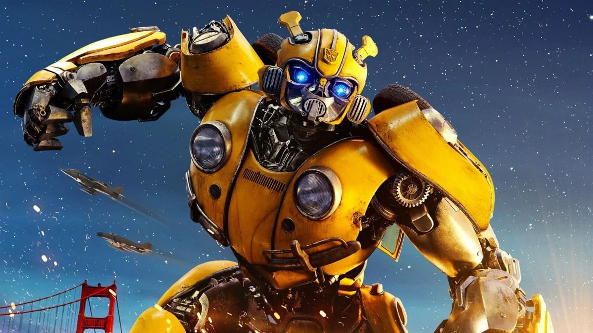 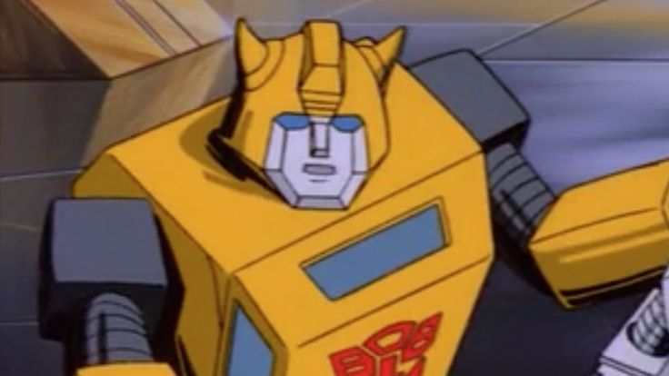 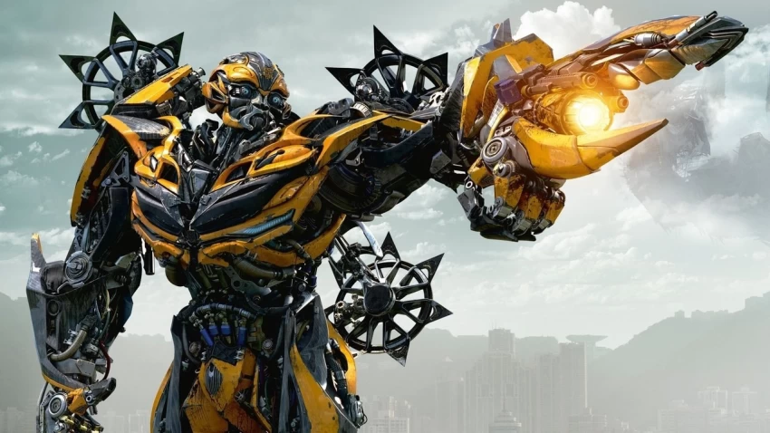Megatron's journey in Transformers lore is a tale of ambition, power, and a descent into tyranny. Megatron began his life as a laborer in the oppressive society of Cybertron, a metallic planet inhabited by intelligent robots known as Transformers. At that time, Cybertron was under the rigid rule of the Cybertronian Senate and the Primes, an elite class. Life in the lower levels of Cybertron was harsh and unforgiving, especially for miners like Megatron. As he toiled in the darkness, he witnessed his fellow Transformers endure grueling labor and merciless oversight. The weight of injustice fueled a burning anger within him. From the very beginning, Megatron possessed a powerful charisma and an unbreakable spirit. He began to question the system, dreaming of a world where all Cybertronians would be equal. He took the name *Megatronus, after one of the original Primes, as a symbol of rebellion and strength. Using his powerful voice and skills as a gladiator, Megatron rose as a hero among the oppressed, eventually shortening his name to *Megatron*. He advocated for freedom and reform, initially attracting followers from all walks of life. He united the downtrodden into a faction known as the Decepticons, envisioning a Cybertron ruled by strength and equality. It was around this time that he crossed paths with Orion Pax, a data clerk who was inspired by Megatron’s vision and joined his cause. For a time, it seemed that change was within reach. But the more power Megatron gained, the more he wanted. His methods became more aggressive, and his vision twisted. He believed only through absolute control could Cybertron be saved. Orion Pax, witnessing his friend’s descent, chose a different path. Reborn as Optimus Prime, he formed the *Autobots* to stand against Megatron’s growing tyranny. With Megatron at its helm, the Decepticon movement evolved from a rebellion to a force of conquest, aiming not just to change Cybertron but to dominate it. This led to the Cybertronian civil war, a catastrophic conflict that tore the planet apart and forced the Autobots and Decepticons to scatter across the galaxy. Megatron’s ambition soon expanded beyond Cybertron; he sought to conquer Earth and other planets as well, seeing them as resources to fuel his war machine. Despite his ruthlessness, Megatron was not without a code of honor or intelligence. He saw Optimus Prime as both a nemesis and a brother, bound to him by shared ideals, even as they fought for entirely different versions of freedom. Over countless battles, Megatron and Optimus forged an unbreakable rivalry one grounded in mutual respect, even if buried under layers of betrayal and conflict. In the end, Megatron’s journey is tragic. He began with noble intentions but allowed his thirst for power to corrupt his vision. As a leader of the Decepticons, he became a symbol of relentless ambition, a ruler who believed that fear and force could bring order to the universe. But his story also serves as a reflection on the cost of power and the price of sacrificing ideals for control. Ultimately, Megatron remains one of the most iconic and complex figures in the Transformers universe a tyrant born from a hero’s dream, forever locked in a battle that would span across time, space, and countless lives.
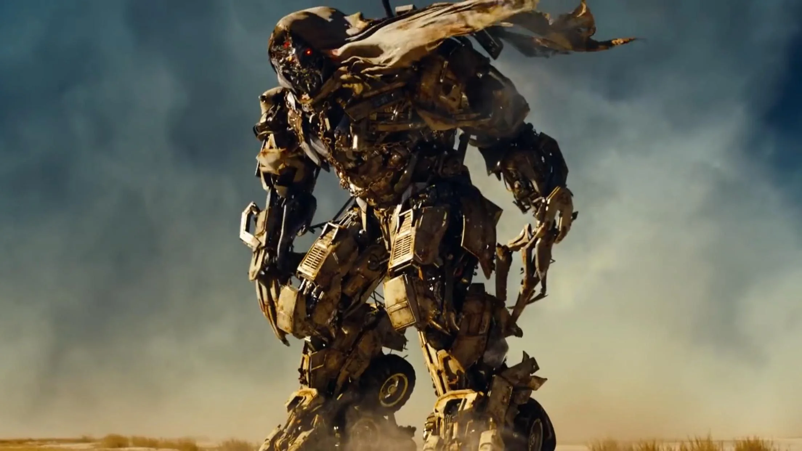 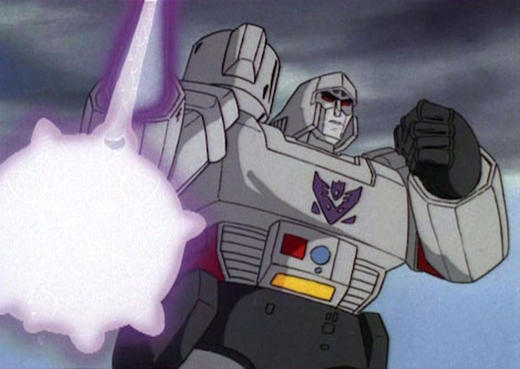Shockwave, a prominent figure in the Transformers universe, is a calculating and brilliant Decepticon scientist known for his cold logic and unyielding dedication to Megatron's cause or, in some interpretations, his own ambition. His story varies depending on the Transformers continuity, but here is an overarching summary of his role across different narratives:Shockwave typically serves as the Decepticons' chief scientist and a high-ranking officer. Unlike many of his more impulsive comrades, Shockwave is a master of strategy and invention, often creating powerful weapons or schemes to further the Decepticon cause. His iconic alt-mode is usually a futuristic laser gun or a Cybertronian spacecraft. Shockwave's single eye and stoic demeanor symbolize his unwavering dedication to logic. However, this adherence to logic often makes him a wildcard he will pursue his plans with ruthless efficiency, even if they conflict with Megatron's leadership.In the G1 series, Shockwave is left on Cybertron to oversee the planet during Megatron's absence. His cold, calculating nature makes him a formidable leader in his own right. Though loyal to Megatron, some stories hint at his desire to overthrow Megatron and become leader himself, believing his logic-driven rule would better serve the Decepticons.In the IDW continuity, Shockwave's backstory is greatly expanded. Once a senator on Cybertron, he was a passionate advocate for progress and equality. His empathy made him a threat to the ruling class, leading to his capture and horrific reprogramming by the Functionist Council. This process stripped him of his emotions, turning him into the cold, logical being we know. Shockwave's scientific endeavors in this continuity are monumental. He experiments with time travel, manipulating events across eons to ensure the Decepticons' rise. His ultimate plan, known as the Dark Cybertron arc, involves merging Cybertron with a planet-destroying entity to recreate the universe in his image.In Transformers: Prime, Shockwave is portrayed as a terrifyingly powerful scientist and warrior. He is responsible for creating the Predacons and perfecting cloning technology. Though Megatron trusts him, Shockwave's allegiance often feels tied more to his experiments than loyalty.Logic vs. Emotion: Shockwave embodies the clash between pure logic and emotional nuance. While his plans are often ingenious, his inability to account for the unpredictability of emotion and free will often leads to his downfall. Ambition: In many continuities, Shockwave's ultimate goal is to seize control, believing his logical rule would perfect Cybertron. Science as Power: Shockwave's experiments and inventions often tip the scales of battle, showcasing the double-edged nature of scientific progress."Emotion clouds judgment.Logic is the key to victory." Shockwave remains one of the most fascinating characters in the Transformers universe. His relentless pursuit of perfection, coupled with his chilling detachment, makes him both a vital ally and a fearsome adversary. Would you like details about a specific continuity or an exploration of his role in a particular storyline.
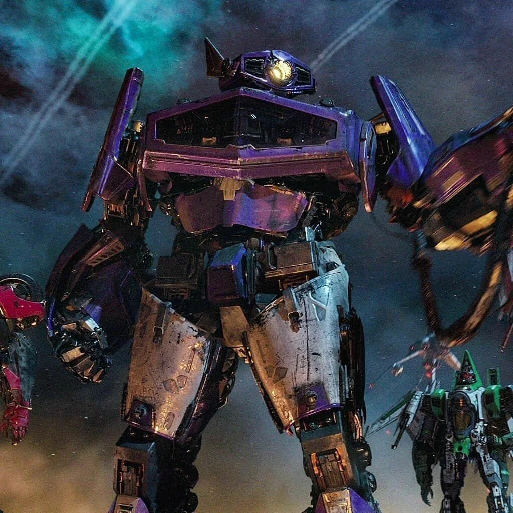 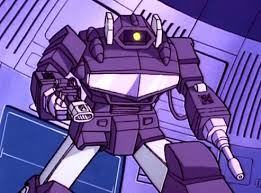 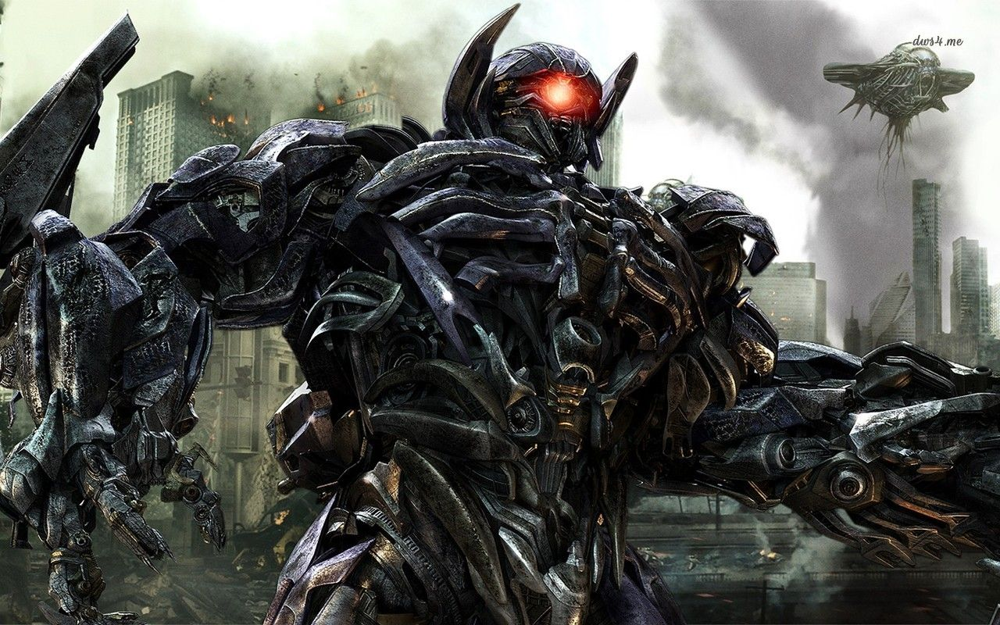On the war torn planet of Cybertron, where Autobots and Decepticons clashed in a fierce battle for control, Ratchet, the Autobot medic, found himself at a crossroads. His role was clear keep his comrades in fighting shape but the war was taking its toll. The battlefield was not just physical; the emotional scars were equally heavy One day, after a particularly brutal skirmish, Ratchet found himself patching up soldiers in the Autobot base. His hands moved mechanically, welding and repairing with precision, yet his mind raced. The war was endless, and no matter how many wounds he healed, the scars left behind on Cybertron and on his fellow Autobots would never fade. "I,m not built for this," Ratchet muttered to himself, his optic sensors flickering slightly in frustration. Optimus Prime, the wise and courageous leader of the Autobots, entered the room. "Ratchet, what troubles you?" Ratchet looked up at Optimus, his usually steadfast demeanor giving way to exhaustion. "I,ve been healing broken bodies for so long, Optimus. But I can’t fix what’s truly broken. The war… it keeps taking. I don’t know how much longer I can do this." ou are more than just a medic. You are the heart of this team. You hold us together when we feel like falling apart." Ratchet stood still, his optics dimming as he processed thee words. Optimus gave a deep, knowing sigh. "We all struggle, Ratcht. But yHe had always thought of himself as simply the one who mended, not the one who inspired. But maybe, just maybe, it wasn’t just the tools of his trade that made him vital to the Autobots. It was his resolve to stand firm, even when the world around him crumbled. "You're right," Ratchet said, his voice steadier now. "I may not be able to stop the war, but I can keep fighting. I can keep healing. It’s not just about fixing damage it’s about giving hope." As the Autobots gathered for the next mission, Ratchet, though weary, stood tall. The battlefield awaited, but now he faced it with a renewed sense of purpose not just as a medic, but as a symbol of resilience. And so, Ratchet pressed forward, determined to do what he could to heal both his comradesken world they fought for.Ratchet stood in the shadow of an enormous Cybertronian ruin, his optics scanning the desolate landscape. The war was long over, but the scars it left on Cybertron were deep, and even now, the Autobots struggled to restore their homeworld. As the team’s medic, Ratchet had always been a lifeline, patching up his comrades in the heat of battle. Now, he faced a different kind of challenge. "Ratchet, you’re sure this is the place?" Bumblebee’s cheerful voice crackled over the comms. The scout’s yellow frame appeared over a ridge, his head tilting as he examined the structure. "Positive," Ratchet replied, gesturing toward a crumbling entrance. "The old data banks indicated there might be a stash of pre-war medical tech here. If we can recover it, it could revolutionize how we heal Cybertronians." Arcee appeared next, her movements cautious. "I don’t like this. The Decepticons scavenged most of the ruins years ago. If they left this place alone, there’s probably a good reason." Ratchet grunted. "Or they were too short-sighted to recognize its value. Either way, we don’t have the luxury of leaving stones unturned." The trio ventured into the ruins, their footfalls echoing against the walls. The air was thick with dust, and ancient Cybertronian glyphs glowed faintly along the corridors. Ratchet’s scanners hummed softly as he navigated, his focus unwavering. "Found something," he announced after a few minutes, kneeling beside a console that looked partially operational. His skilled hands began to reconnect power lines, reroute circuits, and coax the ancient machine back to life. Arcee watched the dimly glowing screen flicker. "What is it?" she asked. "A schematics database," Ratchet said, his voice tinged with excitement. "Not just medical tools entire systems for nanite repair and energy stabilization. This could save millions of lives!" But his enthusiasm was cut short by a deep rumble that reverberated through the structure. Bumblebee raised his blaster. "Uh, guys? We’ve got company." A hulking figure emerged from the shadows a Decepticon scavenger. It was Breakdown, and he was not alone. A squad of Vehicons flanked him, their optics glowing crimson. "Looks like the Autobots found something valuable," Breakdown sneered, his voice a grating growl. "We’ll take it from here." "Not happening," Ratchet growled, standing protectively in front of the console. His hand shifted into a wrench like weapon. "You want it? You’ll have to get through us." A fierce battle erupted in the ancient hall. Bumblebee darted between the Vehicons, his speed unmatched, while Arcee’s precision strikes brought down their ranks one by one. Ratchet focused on the console, desperately trying to transfer the data before the fight could destroy it. Breakdown charged at him, swinging a massive hammer. Ratchet barely dodged in time, his spark pounding. "I’m a medic, not a warrior!" he muttered, transforming his weapon into an energy pulse cannon. He fired, hitting Breakdown’s shoulder and sending the Decepticon staggering. "I’ve got you, Doc!" Bumblebee shouted, launching himself at Breakdown and tackling him to the ground. With a final keystroke, Ratchet yelled, "Data secured! Let’s move!" Arcee covered their retreat, her blades flashing as she held off the remaining Vehicons. The trio transformed and sped out of the ruins, Breakdown’s frustrated roars echoing behind them. Back at Autobot HQ, Ratchet uploaded the data into the central system. Optimus Prime watched as the schematics unfolded, his optics bright with hope. "You’ve done well, Ratchet," Optimus said, placing a hand on his shoulder. "This discovery will shape the future of Cybertron." Ratchet nodded, finally allowing himself a small smile. "Just doing my job."
.jpg) 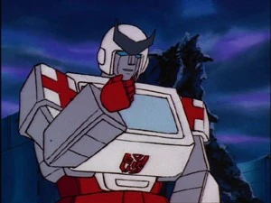
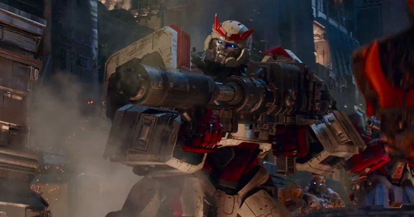
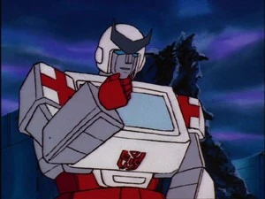
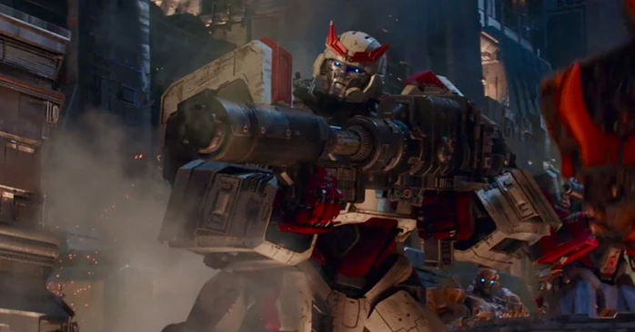
{kind=link}
{kind=link}
{kind=link}
{kind=link}
{kind=link}
{kind=link}
{kind=link}
{kind=link}